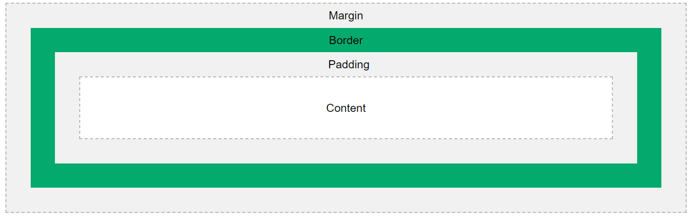

El modelo de caja (box model) es un concepto fundamental en el diseño web que describe cómo se estructura y dimensiona un elemento HTML en una página. Cada elemento HTML, como un párrafo, una imagen o un div, se considera una caja rectangular, y el modelo de caja describe cómo se calculan sus dimensiones y cómo interactúan con otros elementos.
Contenido (Content): Es el área que contiene el contenido real, como texto, imágenes o elementos anidados. Es el área visible dentro de la caja. Relleno (Padding): Es un espacio opcional y transparente que rodea el contenido. Se utiliza para crear espacio adicional entre el contenido y los bordes de la caja. Borde (Border): Es una línea que rodea el contenido y el relleno. Puede tener un color, grosor y estilo definidos, como sólido, punteado o en relieve. Margen (Margin): Es un espacio transparente que se encuentra fuera del borde. El margen se utiliza para crear espacio entre la caja actual y otros elementos en la página. En conjunto, el contenido, el relleno, el borde y el margen definen el tamaño total de una caja en una página web. Es importante comprender el modelo de caja porque afecta el diseño y el posicionamiento de los elementos en una página. Al agregar relleno, bordes o márgenes a una caja, su tamaño total aumentará y afectará cómo se posiciona y se relaciona con otros elementos. Además, en CSS (Cascading Style Sheets), se pueden aplicar propiedades específicas para controlar cada uno de estos componentes del modelo de caja, como width (ancho), height (altura), padding (relleno), border (borde) y margin (margen). Estas propiedades permiten ajustar la apariencia y el diseño de las cajas en una página web.